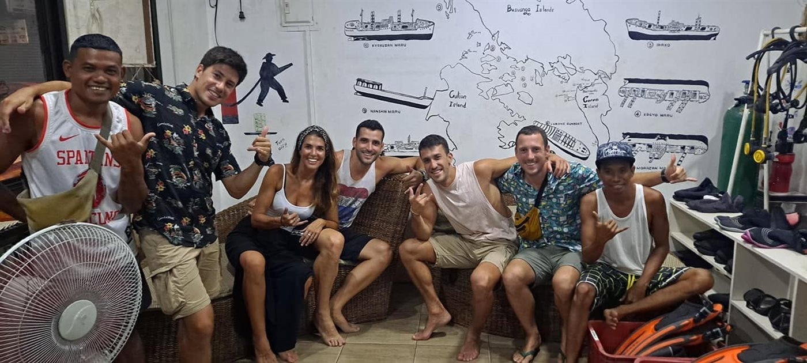
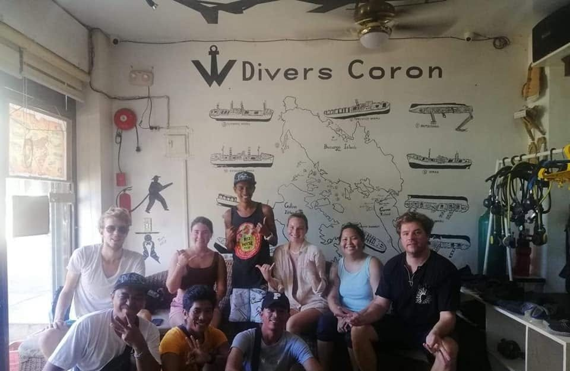

Dive Coron’s WWII Wrecks and Reefs With Guides Who Know Every Site
W Divers Coron is a local dive shop running guided wreck diving, reef diving, and island hopping trips across Coron Bay — with boat, guiding, and trip logistics handled for you from the moment you message us.
Three Ways to Experience Coron Bay
Every trip is guided by our local team and organized around your group — whether you’re chasing WWII wrecks or spending the day island hopping.

Wreck Diving
Guided dives on Coron Bay’s WWII Japanese shipwrecks — the trip our guests talk about most.
Explore wreck diving
Reef Diving
Colorful reef sites around Coron Bay, well suited to a relaxed second dive or newer divers.
Explore reef diving
Island Hopping
A day around Coron’s uninhabited islands and lakes — organized by the same team, no diving required.
Explore island hopping
Certified Divers and First-Timers, Welcome on the Same Trip
Guests consistently mention how well our team handles mixed groups — certified divers and non-certified guests traveling together — along with smooth, well-organized two-day trips from start to finish.
- Guides who are attentive with mixed-experience groups
- Boat, food, and scheduling handled for you
- Local knowledge of Coron Bay’s wreck, reef & island sites
Guides Our Guests Ask For by Name
Rollie, Jex, and Trixie are regularly mentioned in guest feedback for being knowledgeable, friendly, and attentive on the water — the same team that will guide your trip.
- Local guides based in Coron Town Proper
- Consistently named in guest reviews

What People Say After Diving With Us
A recurring theme in recent reviews: a smooth, well-organized two-day dive trip covering both wrecks and reefs, with good food onboard.
Guests frequently name Rollie, Jex, and Trixie as knowledgeable, friendly guides who made the trip feel easy and well looked after.
Reviewers describe the team as accommodating of mixed groups — certified and non-certified divers diving comfortably on the same trip.
Ready to Dive Coron Bay?
Message us with your dates and group size — certified, non-certified, or a mix — and we’ll help you plan the right trip.